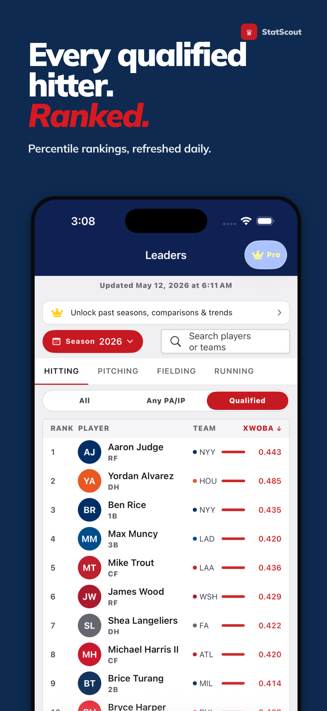
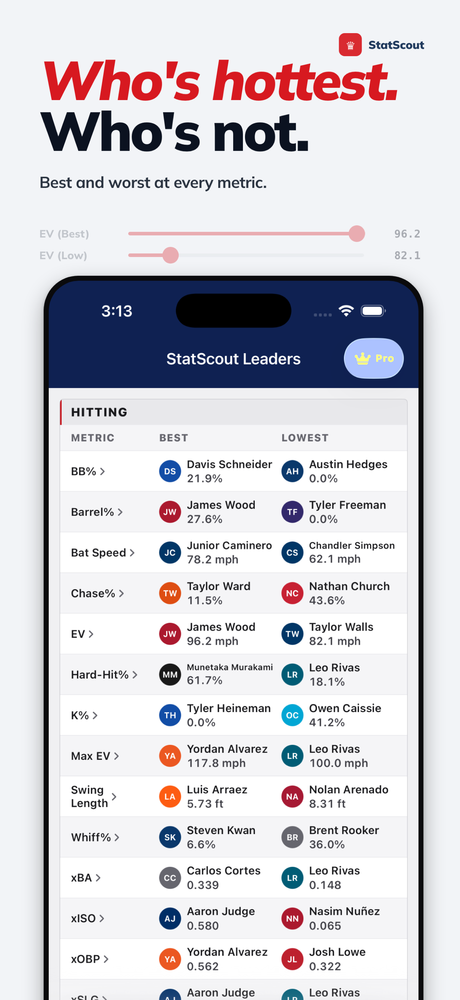

Baseball Savvy StatScout brings visual percentile rankings, nightly leaderboards, and advanced metrics for qualified players. Free with no ads or accounts.
iPhone · Nightly Updates · Privacy First
Download on the App Store

No bloat, no sign-up. Free to start — upgrade for deeper insights.
See where every qualified player ranks in xwOBA, Hard-Hit%, Sprint Speed, Barrel%, and more with color-coded percentile bars.
Filter the entire league across Hitting, Pitching, and Running metrics. Rankings refresh every night with the latest Statcast data.
Type a name and jump straight to their profile. Every qualified player in the league, indexed and searchable instantly.
Browse all 30 MLB teams with full rosters, positions, and player percentile rankings. See how every lineup shakes out.
Compare player metrics across seasons to spot improvements, declines, and breakout trends with StatScout Pro.
xwOBA, Hard-Hit%, Barrel%, Sprint Speed, Chase Rate, Whiff%, Fastball Velo, Exit Velocity, Launch Angle, and more.
No accounts. No ads. No third-party tracking. StatScout fetches public data from a backend — no personal information ever leaves your device.
Privacy Policy →How it's built and why it matters.
Most baseball analytics tools are buried in cluttered websites or locked behind paywalls. I wanted something that puts the numbers front and center — clean, fast, and actually useful on a phone.
StatScout reads nightly Statcast data, calculates percentile rankings for every qualified player, and surfaces it all in one scannable view. No ads, no tracking, no account. The core features are free — always.
An optional upgrade for deeper analysis. $4.99/month (or included with Pro yearly).
Year-over-Year Comparisons. See how a player's metrics have evolved across multiple seasons. Spot breakout candidates and decline trends at a glance.
Multi-Season Trends. Pull up any stat over the last several seasons in one chart. See the full arc of a player's development.
Early Access. Pro subscribers get new features first as StatScout continues to grow.
| Platform | iOS 17+ |
| Language | Swift 6 with strict concurrency |
| Framework | SwiftUI |
| Data Source | Statcast via MLB Stats API |
| Backend | Supabase with nightly refresh |
| Updates | Automated via GitHub Actions |
Percentiles as the interface. Instead of tables of raw numbers, StatScout ranks every player on a 0–100 scale and shows it as a visual bar. One glance tells you if someone is elite (90+), average, or below.
Nightly automation. The data pipeline runs every night via GitHub Actions — fetch, compute percentiles, push to Supabase. By morning, the app has fresh rankings. No manual updates, no stale data.
Spotlight metric prioritization. Each player profile highlights their top (and bottom) metrics so you can instantly see what a player does best — and where they struggle.
Privacy as a feature. No accounts, no analytics, no crash reporting. StatScout doesn't know who you are. The app simply fetches public data and displays it.
Baseball Savvy StatScout is free on the App Store. No account required. Upgrade to Pro anytime.
Download on the App Store